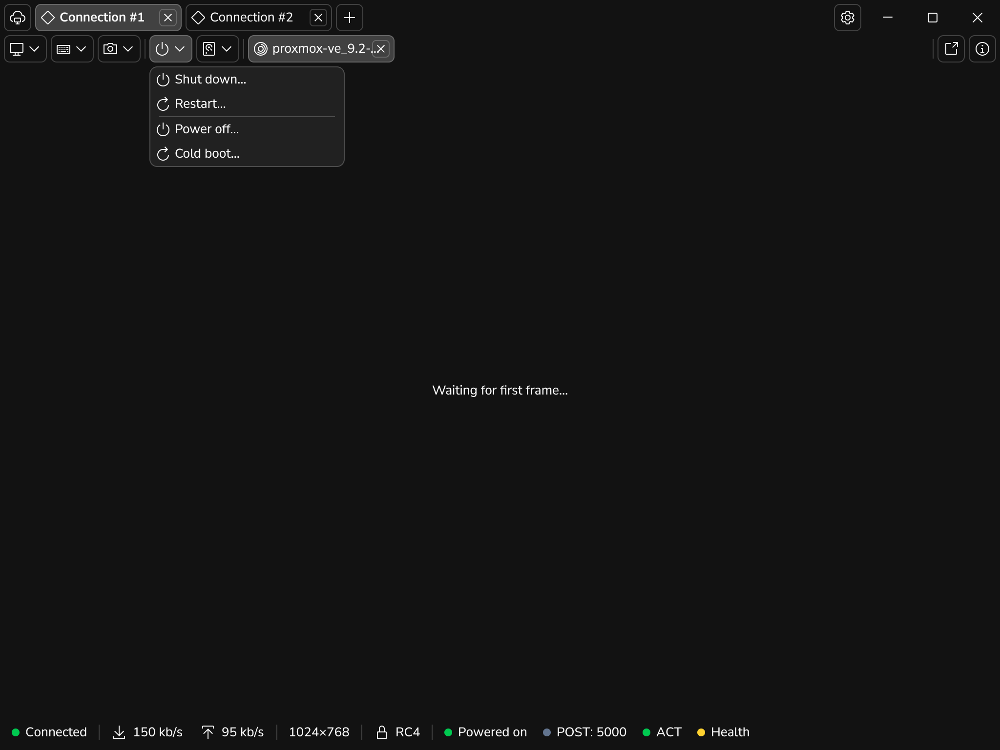

Spice on macOS
There's no good native Spice client for the Mac. Server Remote speaks Spice itself, through its own Rust client library.
One native client for remote desktops and server consoles, built for the protocols that never got a good client on the platform you use.
Early and experimental. Free and open source under MIT or Apache 2.0.

Most protocols already have a decent client somewhere. Server Remote goes after the gaps:
There's no good native Spice client for the Mac. Server Remote speaks Spice itself, through its own Rust client library.
HPE's Remote Console is Windows-only, and older iLO hardware predates the HTML5 console. Server Remote is implementing the console protocol from scratch.
VNC, Spice and iLO in tabs side by side, with the same toolbar, on-screen keyboard and trackpad for each.
| Protocol | Status |
|---|---|
| VNC / RFB | Works Display, mouse and keyboard end to end; richer encodings and TLS to come |
| Spice | In progress Connects, renders, and takes mouse and keyboard input |
| HPE iLO Remote Console | Starting soon Video, keyboard, mouse and power control, written from scratch |
| Dummy test pattern | Works Try the app without a server |
The roadmap has the details.
There's no release yet. Builds for Windows, macOS (universal) and Linux
come out of every push to main: open the latest
Build run
and download its artifact (you need to be signed in to GitHub).
Or build it yourself with Rust 1.85 or newer:
git clone https://github.com/itisrazza/ServerRemote
cd ServerRemote
cargo run -p server-remote